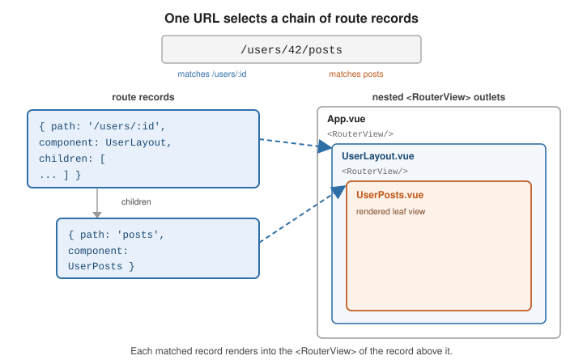

Routing
|
This content was generated with the assistance of AI and should be verified against the official documentation before being relied on in production. |
Vue’s official client-side router is Vue Router: it maps the URL to a tree of components, keeps the address bar in sync, and provides links, params, guards, and history control. The Vue guide introduces it at Routing; everything below is in the Vue Router docs.
Creating the router
Build a router instance with createRouter, choosing a history implementation, then install it with
app.use(router):
import { createRouter, createWebHistory } from 'vue-router'
import Home from './views/Home.vue'
const router = createRouter({
history: createWebHistory(import.meta.env.BASE_URL),
routes: [
{ path: '/', component: Home },
{ path: '/about', component: () => import('./views/About.vue') },
],
})import { createApp } from 'vue'
import App from './App.vue'
import router from './router'
createApp(App).use(router).mount('#app')createWebHistory uses the HTML5 History API and needs a server fallback that serves index.html for
unknown paths. createWebHashHistory keeps the route after a #, so it works on any static host with no
server config. createMemoryHistory has no address bar and is for SSR and tests. See
History modes.
<RouterView> and <RouterLink>
<RouterView> is the outlet where the matched component renders; <RouterLink> renders an <a> that
navigates without a reload and adds active classes:
<template>
<nav>
<RouterLink to="/">Home</RouterLink>
<RouterLink :to="{ name: 'user', params: { id: 42 } }">Profile</RouterLink>
</nav>
<RouterView />
</template>Route records
Each entry in routes is a route record: at minimum { path, component }. A colon marks a dynamic
segment, whose value appears on route.params:
const routes = [
{ path: '/users/:id', component: UserProfile },
{ path: '/files/:pathMatch(.*)*', component: FileBrowser }, // custom regex + repeatable
]To keep the component decoupled from the router, set props: true so params are passed as component props
instead of read from useRoute(). props can also be an object (static props) or a function
route => ({ ... }) (derive props, including from the query string):
{ path: '/users/:id', component: UserProfile, props: true },
{ path: '/search', component: Results, props: route => ({ q: route.query.q }) },Nested routes
A record’s children render into a <RouterView> inside that record’s component, so a URL selects a
chain of records and each renders into the next outlet:
const routes = [
{
path: '/users/:id',
component: UserLayout,
children: [
{ path: '', name: 'user', component: UserHome },
{ path: 'posts', component: UserPosts },
{ path: 'settings', component: UserSettings },
],
},
]
Named routes and named views
Give a record a name to navigate by identity instead of by URL string — router.push({ name: 'user', params: { id: 42 } }) — which survives path refactors. To render several
outlets at one level, give each <RouterView name="..."> a name and supply a components map (plural) on
the record:
{
path: '/dashboard',
components: { default: DashMain, sidebar: DashSidebar },
}See Named Routes and Named Views.
Redirect, alias, and catch-all
-
redirectsends one path to another:{ path: '/home', redirect: '/' }, or a function of the target route. -
aliaslets one record answer to several paths:{ path: '/', component: Home, alias: '/home' }. -
A
/:pathMatch(.*)*record at the end matches anything unmatched — the 404 page:
{ path: '/:pathMatch(.*)*', name: 'not-found', component: NotFound }Catch-all
routes explains why the pathMatch param name matters when you navigate to it programmatically.
Programmatic navigation
useRouter() returns the instance; push, replace, or move through history:
<script setup>
import { useRouter } from 'vue-router'
const router = useRouter()
function save() {
// ...persist...
router.push({ name: 'user', params: { id: 42 } }) // new history entry
// router.replace(...) -> no new entry
// router.go(-1) -> like the back button
}
</script>Navigation guards and the resolution flow
Guards can redirect (return { name: 'login' }), cancel (return false), or allow (return true or
nothing) a navigation. They run in a fixed order
(Navigation Guards):
-
beforeRouteLeavein components being left. -
router.beforeEach— global, e.g. an auth check. -
beforeRouteUpdatein components that are reused (same record, new params). -
beforeEnteron the entering route record. -
Lazy route components are resolved.
-
beforeRouteEnterin entering components (nothisyet; use its callback). -
router.beforeResolve— global, after in-component guards and async components resolve. -
Navigation is confirmed;
router.afterEachruns (cannot cancel — use it for analytics and titles).
router.beforeEach((to) => {
if (to.meta.requiresAuth && !isLoggedIn()) {
return { name: 'login', query: { redirect: to.fullPath } }
}
})<script setup>
import { onBeforeRouteLeave } from 'vue-router'
onBeforeRouteLeave(() => {
if (formDirty.value) return window.confirm('Discard unsaved changes?')
})
</script>Lazy-loaded route components
Point component at a dynamic import() so the bundler splits that view into its own chunk, fetched on
first visit:
{ path: '/reports', component: () => import('./views/Reports.vue') }See Lazy Loading Routes; it pairs well with Async Components.
Scroll behavior
With HTML5 history, supply scrollBehavior to control the viewport on navigation — reset to top, restore
the saved position on back/forward, or scroll to an anchor:
const router = createRouter({
history: createWebHistory(),
routes,
scrollBehavior(to, from, savedPosition) {
if (savedPosition) return savedPosition
if (to.hash) return { el: to.hash, behavior: 'smooth' }
return { top: 0 }
},
})useRoute() and useRouter()
In <script setup>, useRoute() returns a reactive object describing the current route (params,
query, hash, meta, name), and useRouter() returns the router instance for navigation. Do not
destructure useRoute() — watch a getter instead so param changes on the same component are observed:
<script setup>
import { watch } from 'vue'
import { useRoute } from 'vue-router'
const route = useRoute()
watch(() => route.params.id, (id) => load(id), { immediate: true })
</script>The navigation lifecycle
Every navigation, whether from a link click, router.push, or the back button, goes through the same pipeline. The
numbered list above gives the order of the guards; the diagram adds what can interrupt it and when the URL and the
rendered view actually change:
push, link, back button"] --> leave["beforeRouteLeave
(components being left)"] leave --> global["beforeEach (global)"] global --> reuse["beforeRouteUpdate
(reused components, e.g. param change)"] reuse --> enter["beforeEnter (route record)"] enter --> resolveAsync["resolve lazy components"] resolveAsync --> inEnter["beforeRouteEnter
(entering components)"] inEnter --> beforeResolve["beforeResolve (global)"] beforeResolve --> confirm["navigation confirmed
URL updates, DOM updates"] confirm --> after["afterEach (global)
analytics, document title"] leave -. "return false" .-> cancelled["navigation cancelled"] global -. "return a location" .-> redirected["new navigation starts"] enter -. "throw or reject" .-> failed["navigation fails, onError runs"]
A guard that returns a location does not edit the current navigation; it aborts it and starts a new one, so the
beforeEach of a redirect target runs as well. That is the behaviour visible in the log below.
Worked example: the to-do app’s router
The to-do app has a public /login, a protected /todos area with a list and a detail page, a redirect from a legacy
URL, and a 404. The detail route restricts :id to digits and receives it as a prop:
// router.js
import { createRouter, createWebHistory } from 'vue-router'
import Login from './views/Login.vue'
import Layout from './views/Layout.vue' // contains <nav> and a nested <RouterView />
import TodoList from './views/TodoList.vue'
import TodoDetail from './views/TodoDetail.vue' // defineProps({ id: String })
import NotFound from './views/NotFound.vue'
export function makeRouter(auth) {
const router = createRouter({
history: createWebHistory(),
routes: [
{ path: '/login', name: 'login', component: Login },
{
path: '/todos',
component: Layout,
meta: { requiresAuth: true, title: 'Todos' },
children: [
{ path: '', name: 'todos', component: TodoList },
{ path: ':id(\\d+)', name: 'todo', component: TodoDetail, props: true, meta: { title: 'Todo' } },
],
},
{ path: '/old', redirect: '/todos' },
{ path: '/:pathMatch(.*)*', name: 'not-found', component: NotFound },
],
})
router.beforeEach((to) => {
// `matched` includes the parent record, so meta set on /todos protects every child
if (to.matched.some(r => r.meta.requiresAuth) && !auth.loggedIn) {
return { name: 'login', query: { redirect: to.fullPath } }
}
})
router.afterEach((to) => { document.title = to.meta.title ?? 'App' })
return router
}Driven with createMemoryHistory() in place of createWebHistory() so that it runs under Vitest and jsdom, the same
router produced these results:
-
Logged out,
router.push('/todos/7')ends at/login?redirect=/todos/7. The guard log shows two navigations:beforeEach / -> /todos/7(which redirects), thenbeforeEach / -> /login?redirect=/todos/7, followed bybeforeResolveandafterEachfor the login location only. The protected view was never resolved. -
Logged in, the same push renders the layout with its
<nav>and, in the nested outlet,Todo 7(the string7arrived as theidprop), andafterEachsetsdocument.titletoTodo. The guards fire in the orderbeforeEach,beforeEnter(when declared on the/todosrecord),beforeResolve,afterEach. -
/todos/abcdoes not match the digits-only pattern, so it falls through to the catch-all record: the rendered view is404androute.nameisnot-found. -
/oldredirects: the finalfullPathis/todos, androute.redirectedFrom.fullPathstill reports/old.
The regular expression in :id(\\d+) is a JavaScript string, hence the doubled backslash. Constraining
params in the route is cheaper and clearer than validating them inside the component, and it gives you the 404
for free.
Reusing a component when only the params change
Navigating from /todos/1 to /todos/2 matches the same record, so Vue Router reuses the component instance: its
setup() does not run again and onMounted does not fire. A test that pushes /x/1 and then /x/2 against a
component with an id prop counted exactly one setup() call, while the id prop changed from 1 to 2 and an
onBeforeRouteUpdate guard received 1 -> 2. Load data on param changes with a watcher on the param, or use that
in-component guard:
<script setup>
import { ref, watch } from 'vue'
import { onBeforeRouteUpdate } from 'vue-router'
const props = defineProps({ id: String })
const todo = ref(null)
async function load(id) {
todo.value = await fetch(`/api/todos/${id}`).then(r => r.json())
}
watch(() => props.id, load, { immediate: true }) // initial load and every param change
onBeforeRouteUpdate((to, from) => {
if (to.params.id === from.params.id) return // only the query or hash changed
})
</script>If the component must be rebuilt for every id (to reset local state, for example), key the outlet:
<RouterView :key="$route.fullPath" />. Use that sparingly, because it discards the instance and re-runs every
hook.
See also
-
Vue Router documentation — the complete API and guide.
-
State Management — Pinia stores read
useRoute()and the Router integrates with Vue DevTools. -
Server-Side Rendering —
createMemoryHistoryand per-request router instances. -
Routing and Routing and Navigation — the equivalent routers elsewhere.